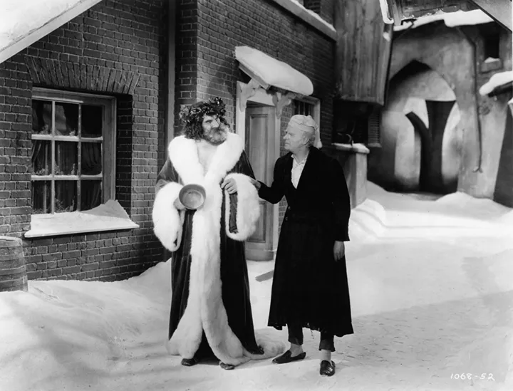

Різдвяний гімн
Короткий опис фільму
Щоб нагадати собі про те, що Різдво означає насправді, вирушайте
разом з Ебенезером Скруджем у подорож на пошуки різдвяного духу. Ця
стрічка — одна з багатьох екранізацій відомої дікенсівської
"Різдвяної пісні в прозі" (1843), яка, хоч скільки її дивись,
нагадує нам, що дива стаються. У ролі Скруджа — яскравий і
характерний Реджинальд Овен, зірка фільмів "Мері Попінс", "Вони
зустрілись у Бомбеї" та інших.

Зустрінемось у Сент-Луїсі
Короткий опис фільму
Не зовсім святковий фільм, проте музичний супровід та вміння
головної героїні Джуді Гарланд вбиратися, безперечно робить його
особливим для цих святкових днів. Світлу й романтичну історію про
одну американську родину свого часу було визнано однією з
найкасовіших стрічок XX століття.
Диво на 34-й вулиці
Короткий опис фільму
Найімовірніше, ви знайомі з однойменним фільмом 1994 року, де роль
дівчинки, яка вірить у диво, зіграла чарівна Мара Вілсон.
Обов’язково подивіться оригінал далекого 1947 року випуску, де
головну роль виконує Наталі Вуд.
Святковий роман
Короткий опис фільму
Цей фільм змушує повірити в казку. Молода вдова й мати-одиначка
наважується на крадіжку напередодні Різдва... Продавець помічає, але
не здає дівчину поліцію і, зрештою, бере на себе відповідальність за
зниклий товар. У найкращих традиціях святкових фільмів продавець і
дівчина закохуються одне одного...
Як Ґрінч украв Різдво
Короткий опис фільму
Звісно, є сучасна версія цієї історії, але варто сказати що вона
далека від оригіналу. Мультфільм 1966 року, знятий за мотивами книги
Лікаря Сьюзаважко знайти. Але пошуки, якщо ви їх почнете, повністю
себе виправдають — зрештою, хто з нас не заплаче, коли серце Ґрінча
збільшується втричі?..
Додаткова інформація
- Студія - The Cat in the Hat Productions, MGM Television, MGM
Animation/Visual Arts
- Країна - США
- Мова - англійська
Комантарі до цього фільму можна переглянути на сайті Letterboxd
Переглянути фільм можна за цим посиланням
Повернутися до навігації по сайту
Сторінка розробника статі
Детальніше можна прочитати про мене тут